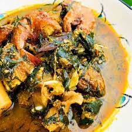

Okazi Soup

Description
Okazi Soup (Ukazi Soup) is the Igbo version of the Efik’s Afang soup.This delicious Nigerian soup is made up of a mixture of vegetables(Afang /Okazi leaves and water leaves or spinach or lamb lettuce), assorted fish, meat, spices and a soup thickener, which can be either achi, ofor, ukpo or Egusi.
Ingredients
- 2 handful ground Achi Or Ofor Or Ukpo(Egusi /melon seeds can be used as a substitute)
- 500 gr beef or assorted meat
- 100 gr Smoked fish
- Stock fish (optional)
- Shelled Periwinkle(optional)
- 2 tablespoonful ground crayfish
- Fresh pepper or ground dried pepper (to taste)
- Water leaves(optional)
- Afang Leaves(okazi/ukazi leaves)
- 500 ml Palm oil
- salt to taste
Steps
- First cook the assorted meat and stock fish, Clean the dried fish and set aside.
- Grind the achi or egusi seeds(melon seeds), add some warm water in it, mix well, and set aside.
- Slice the water leaves(if using) and Okazi leaves and set aside.If you are making use of dried Okazi leaves, you can pound or blend it.
- Heat up the palm oil, add some chopped onion , fry a bit and then add the mixed egusi.
- Stir the mixture continuously until the egusi begins to bubble a bit.
- Now add some meat stock, mix thoroughly, cover and leave to boil for 5 minutes. (if using achi, this is the time to add it)
- After 5 minutes, add the stock cube, pepper and ground crayfish.
- Mix well and then add the cooked meat, stock fish and dry fish. You can add periwinkles at the stage , if you have some. Cover and leave to cook for 2 minutes.
- Next , add the Okazi leaves, leave to simmer for 5 minutes and then add the water leaves.Add salt to taste , simmer for 2 minutes and your Okazi Soup is ready. Enjoy!
Okazi/Ukazi soup is usually served hot with Eba, Pounded Yam, Fufu, Semolina, Amala, Wheat meal, Tuwo Masara or any Nigerian Bolus meal.